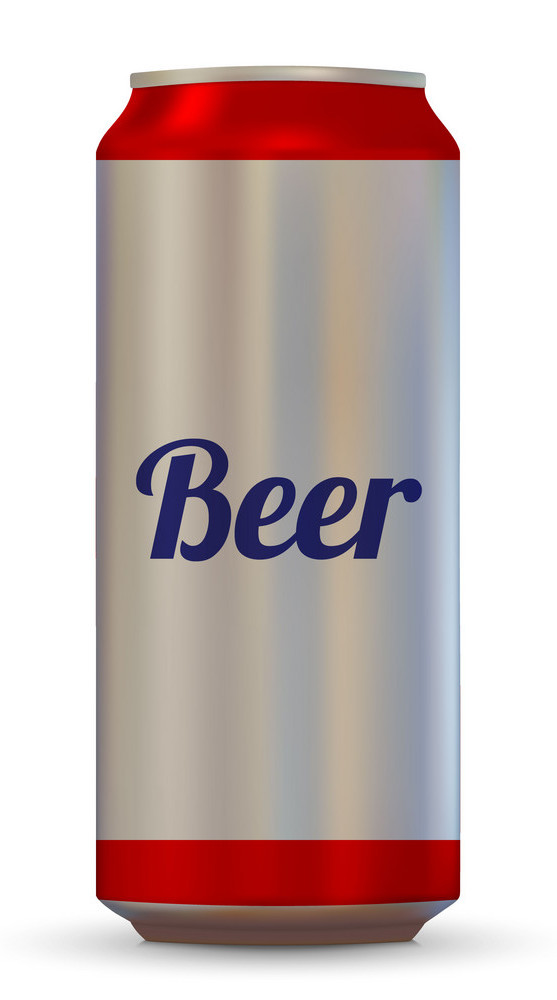

Canned Beer

Description
This recipe is for beer cans down the hatch. Nothing too complicated. Just makin' em cold.Ingredients
- Unopened canned beer (however many you want)
- Bucket
- Ice
- A Gullet

Directions
- Step 1: Take warm beer cans out of pack;
- Step 2: Put warm beer cans into bucket;
- Step 3: Put ice on top of warm beer cans in bucket;
- Step 4: Wait however long you can - if you're patient.
- Step 5: Open beer can with your fingers;
- Step 6: Pour beer down gullet at whatever speed you want;
- Repeat at will.